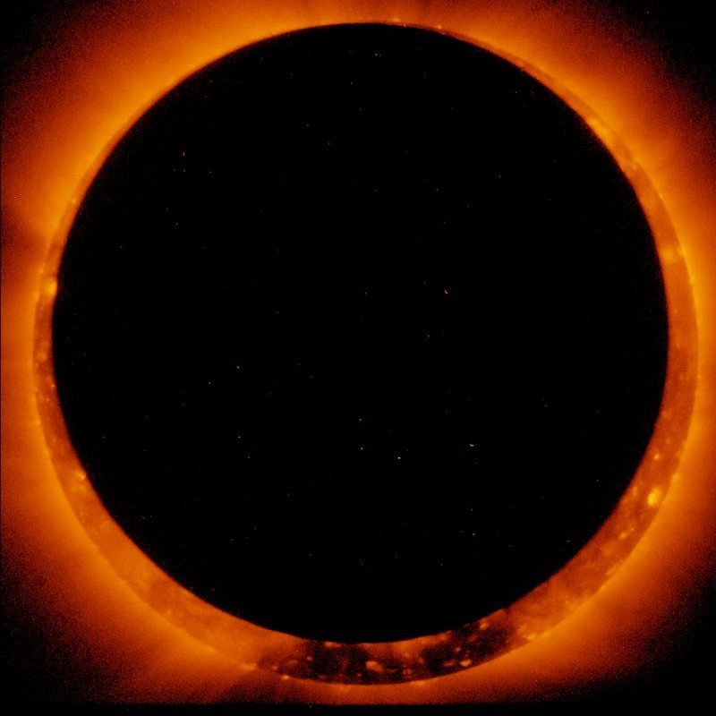
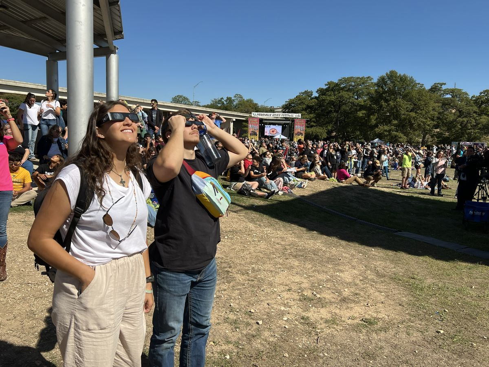
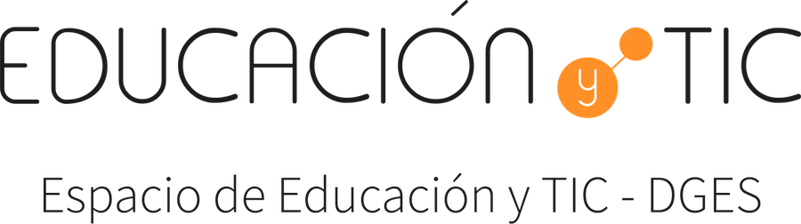

Sonificación del eclipse
Todo el eclipse comprimido en un minuto, para reconocer los sonidos antes del día real. No hace falta apoyar el teléfono.
Las notas melódicas son más musicales; el tono continuo permite seguir mejor los cambios suaves.
Si usas un lector de pantalla, puedes desactivar el relato por voz: los cambios de fase y de cobertura los anunciará tu lector.
Simulación del eclipse
Observa cómo la sombra de la Luna recorre la Tierra. Usa los controles para descubrir a qué hora entra y sale cada zona del círculo mayor.
Animación: Fred Espenak y Michael Zeiler. Licencia CC BY-ND 4.0 (ver Créditos).
Atajos de teclado (con el foco en los controles de la animación): barra espaciadora para reproducir o pausar; flechas izquierda y derecha para moverse de a un minuto; con Mayúsculas, de a 10 minutos.
Así se ve desde la Tierra
Time-lapse con fotos reales tomadas cada 5 minutos durante el eclipse anular del 26 de diciembre de 2019 en Kinnigoli (India), entre las 08:00 y las 11:05: el Sol se va cubriendo, forma el anillo y vuelve a descubrirse.
Siddharth Mallya · CC BY-SA 4.0 · Wikimedia Commons
Momentos clave
Elige un momento para llevar la animación a esa hora.
Qué muestra la animación
El globo terrestre visto desde el espacio, con América del Sur a la izquierda y África a la derecha. Una franja amarilla marca el camino del anillo de fuego: empieza en el océano Pacífico, al sudoeste de Chile, cruza Chile, Argentina y Uruguay, atraviesa el océano Atlántico y termina, al atardecer, en la costa de África occidental. Un gran círculo sombreado, la penumbra, avanza de oeste a este; en su centro, un punto negro, la antumbra, recorre la franja amarilla. Cada cuadro equivale a un minuto.
Cómo leerla: el círculo mayor es la penumbra; quien esté dentro de él verá un eclipse parcial. La mancha pequeña en su interior es la antumbra: allí se verá el anillo de fuego.
¿Cómo funciona?

¿Qué es un eclipse anular?
Ocurre cuando la Luna pasa justo por delante del Sol, pero está un poco más lejos de la Tierra que de costumbre: se ve más pequeña y no alcanza a cubrirlo entero. En el momento máximo queda un anillo de luz alrededor de la Luna: el «anillo de fuego».
Esta experiencia traduce datos en sonido para que puedas «escuchar» el avance del eclipse.
¿Qué es la sonificación?
Sonificar es convertir datos en sonido. Así como un gráfico o un mapa nos permite «ver» la información, la sonificación nos permite «escucharla»: en lugar de mirar una línea que sube o baja, oímos un sonido que cambia. En esta experiencia, la luz del ambiente que mide el sensor del celular se transforma en un tono que varía: con más luz el sonido es más agudo y con menos luz, más grave.
Un antecedente: LightSound
Esta idea ya tiene un antecedente: LightSound, un proyecto de código abierto creado en 2017 en la Universidad de Harvard. Sus instrucciones públicas permiten construir un pequeño aparato que sigue el eclipse a través del sonido, pensado para que las personas ciegas o con baja visión puedan vivirlo: un sensor mide la luz del Sol y la convierte en notas que cambian a medida que la Luna lo cubre. Esta app toma el mismo principio, pero prescinde del aparato físico (el hardware): no hay que comprar piezas ni armar nada, porque usa el celular, un dispositivo que ya está en manos de gran parte de la población (ver Créditos).
El movimiento del teléfono
Tu celular detecta la gravedad. La aplicación requiere que coloques el teléfono completamente horizontal (apoyado sobre una mesa o en la palma de la mano). Si levantas el teléfono, el sonido se pausa. Así controlas cuándo escuchar la experiencia.
El sonido y la luz
El sonido cambia según la cantidad de luz solar (calculada por el reloj o medida por el sensor de tu celular):
- Antes y después del eclipse: hay mucha luz. Escucharás tonos altos (agudos).
- Durante el avance: a medida que la Luna cubre el Sol, el tono desciende gradualmente.
- En el momento máximo: al llegar a la máxima cobertura, el tono será profundo y grave. Luego, a medida que el Sol vuelve a asomarse, el tono subirá hasta ser cada vez más agudo.
- Durante el anillo de fuego: además del tono grave suenan campanitas suaves, para que el momento culminante sea inconfundible.
- Señales al tacto y al oído: en los teléfonos que lo permiten, el celular vibra en cada cambio de fase (con un patrón más largo en el anillo de fuego). Al apoyar el teléfono suenan dos notas que suben y, al levantarlo, dos que bajan.
Observación segura
NUNCA mires directamente al Sol sin la protección adecuada. Hacerlo puede causar daños graves y permanentes en la vista.
Lo que NO debes usar (peligroso) ❌
- Radiografías.
- Vidrios ahumados.
- CD o DVD.
- Lentes de sol comunes (por más oscuros que sean, no sirven).
Observación directa segura ✅
Usa solo anteojos especiales para eclipses homologados y certificados (ISO 12312-2). Si usas telescopios o cámaras, deben tener filtros solares profesionales.

Observación indirecta (fácil y segura) ✅
Es la forma más segura de disfrutarlo sin equipo. Haz un agujero pequeño en un cartón y proyecta la luz del Sol sobre el piso o una pared. Verás cómo la proyección cambia de un círculo a una «medialuna» a medida que avanza el eclipse.
Eclipse solar anular
6 de febrero de 2027
Datos calculados para: Punta del Este, Uruguay.
Los horarios son válidos para toda la región, con pequeñas diferencias según la localidad. Explora la sección Simulación para ver a qué hora entra y sale una localidad del círculo mayor del eclipse, que se desplazará sobre América del Sur y el océano Atlántico.
Institución


ANEP - DGES (Uruguay)
Inspección de Astronomía
EDyTIC (2026)
Aplicación de accesibilidad sensorial desarrollada para promover la astronomía inclusiva.
Acerca de esta app
Instalar la app para usarla sin conexión
Una vez instalada, la app funciona completa sin conexión a internet, incluida la simulación: ideal para el día del eclipse, al aire libre. En Android o en una computadora, usa el botón «Instalar la app» o el menú del navegador. En iPhone o iPad, abre el menú Compartir y elige «Agregar a pantalla de inicio». Conviene abrirla una vez con conexión y entrar a la sección Simulación para que la animación quede guardada.
Privacidad
La app no pide ningún dato a quien la usa y no tiene cuentas ni formularios. Para saber cuántas personas la usan, cuenta las visitas de forma anónima con GoatCounter, un servicio sin cookies que no guarda datos personales ni sigue a nadie entre sitios. Los cálculos del eclipse vienen incluidos y se hacen en el propio dispositivo. Los sensores de movimiento y de luz solo se usan mientras la experiencia está activa, y sus lecturas no salen del dispositivo. En el navegador se guardan únicamente el idioma, el modo de contraste y el tipo de sonido elegidos. Los sitios externos solo se abren si se toca un enlace.
Nota ética sobre el uso de inteligencia artificial
Este proyecto se hizo con la asistencia de herramientas de inteligencia artificial (IA), que participaron como coautoras y como soporte técnico. Queremos decirlo de forma clara.
Qué hizo la IA
- Ayudó a redactar textos y a traducirlos a seis idiomas.
- Ayudó a escribir y probar el código, y a convertir la animación a un formato liviano sin alterarla.
- Propuso opciones de diseño, de accesibilidad y de organización de la interfaz.
Qué hicieron las personas
- Definieron la idea, el objetivo y el enfoque didáctico.
- Revisaron y aprobaron todos los textos y el comportamiento de la aplicación.
- Deciden qué se publica y asumen la responsabilidad de lo publicado.
La IA no tomó decisiones por su cuenta. Ante cualquier error o algo que no se entienda, la responsabilidad es del equipo humano y agradecemos que se nos avise.
Agradecimientos y fuentes
Gran parte de los datos de esta aplicación provienen de EclipseWise.com, cuyos contenidos se basan en las publicaciones Thousand Year Canon of Solar Eclipses 1501 to 2500 y Thousand Year Canon of Lunar Eclipses 1501 to 2500. Todos los cálculos de eclipses son de Fred Espenak, quien asume plena responsabilidad por su exactitud.
Se permite reproducir estos datos acompañados de un enlace y del siguiente reconocimiento: “Eclipse Predictions by Fred Espenak, www.EclipseWise.com”
Los diagramas y mapas pueden usarse siempre que NO se alteren (salvo cambios de tamaño) y que la línea de crédito incluida NO se elimine ni se cubra.
Animación global del eclipse
Estas animaciones pueden usarse y compartirse libremente bajo una licencia Creative Commons, siempre que no se modifiquen y se incluya la atribución.
Atribución:
Imágenes
Las fotografías y el time-lapse provienen de Wikimedia Commons:
- «Anillo de fuego» del 4 de enero de 2011, nave Hinode (JAXA/NASA), publicado por NASA’s Scientific Visualization Studio. Dominio público. Ver en Wikimedia Commons.
- Time-lapse del eclipse anular del 26 de diciembre de 2019 en Kinnigoli (India), de Siddharth Mallya, con licencia CC BY-SA 4.0. En esta app se usa recortado y convertido a otro formato, con la misma licencia. Ver en Wikimedia Commons.
- Personas observando el eclipse anular del 14 de octubre de 2023 en Kerrville (Texas), NASA’s Scientific Visualization Studio. Dominio público. Ver en Wikimedia Commons.
Para saber más
Datos técnicos completos del eclipse (circunstancias, mapas y tablas): EclipseWise — Annular Solar Eclipse of 2027 Feb 06.
Sonificación: para profundizar en esta técnica, que transforma datos en sonido del mismo modo que un gráfico los transforma en imagen, ver The Sonification Handbook (T. Hermann, A. Hunt y J. G. Neuhoff, eds., Logos, Berlín, 2011), libro de acceso abierto.
LightSound (Universidad de Harvard): proyecto de código abierto, iniciado en 2017, que permite construir un dispositivo que convierte la luz del Sol en sonido para que las personas ciegas o con baja visión puedan seguir un eclipse solar. En su sitio se publican las instrucciones de armado, los diagramas y el código. LightSound — astrolab.fas.harvard.edu.
En memoria de Fred Espenak (1953–2025)
Agradecemos y reconocemos el aporte infatigable de Fred Espenak, quien durante décadas puso a disposición de observadores de eclipses de todas las épocas y lugares sus cálculos de las circunstancias de estos fenómenos. Esta aplicación existe, en buena medida, gracias a su trabajo.